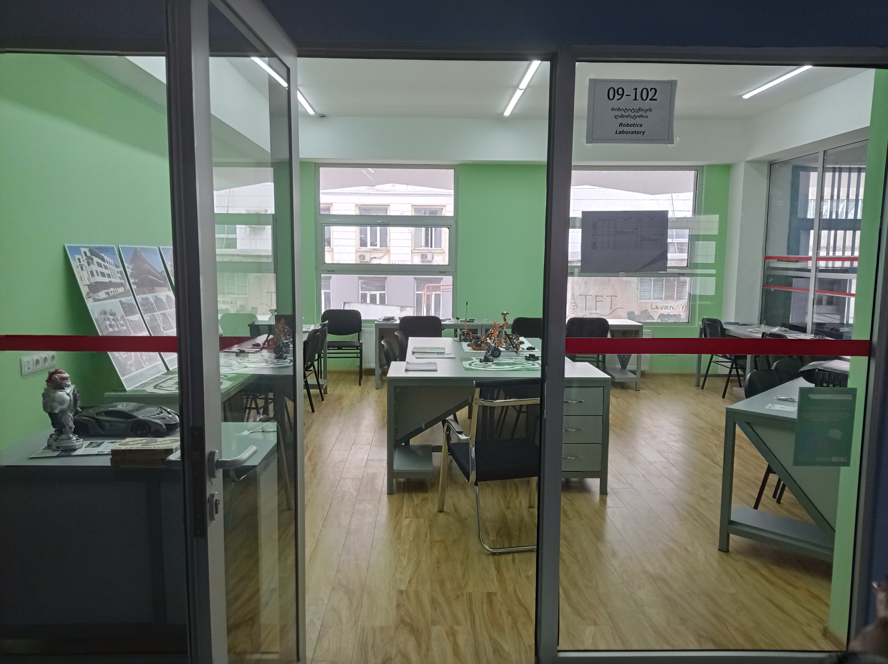
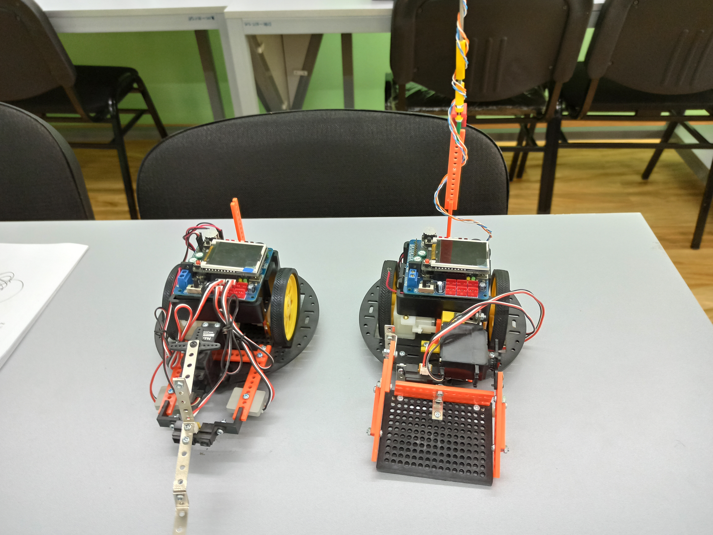
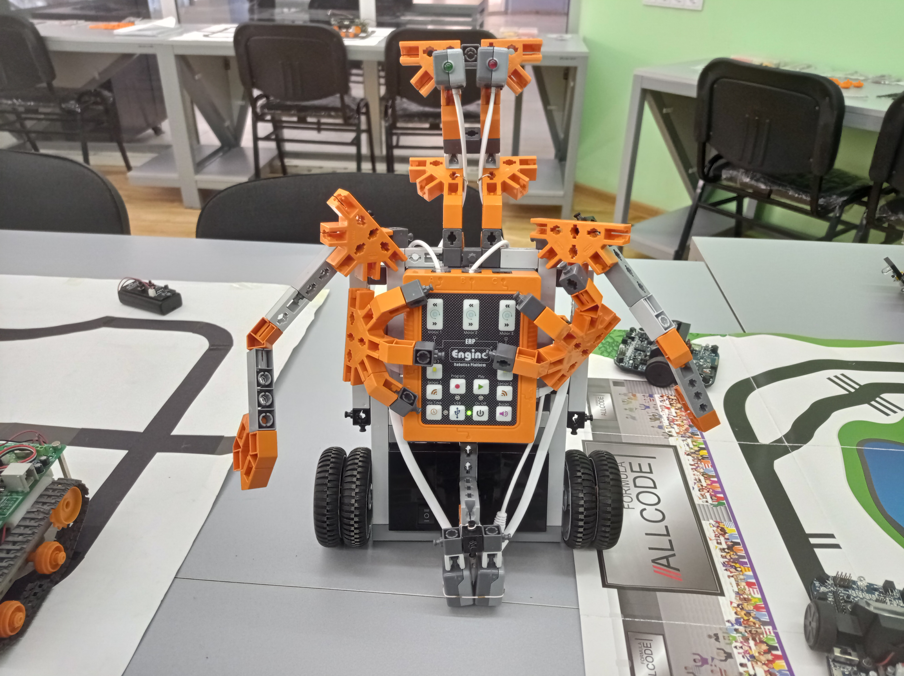
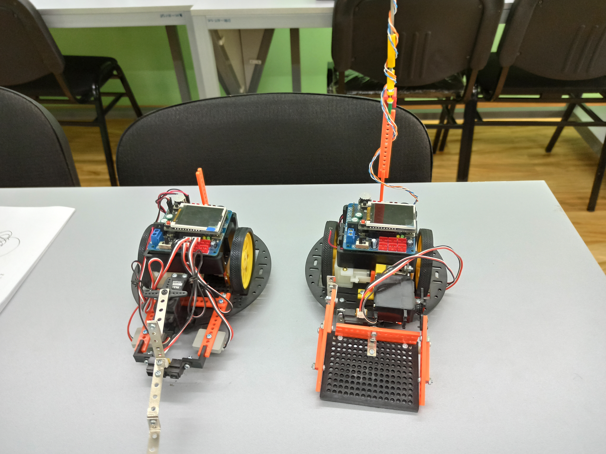
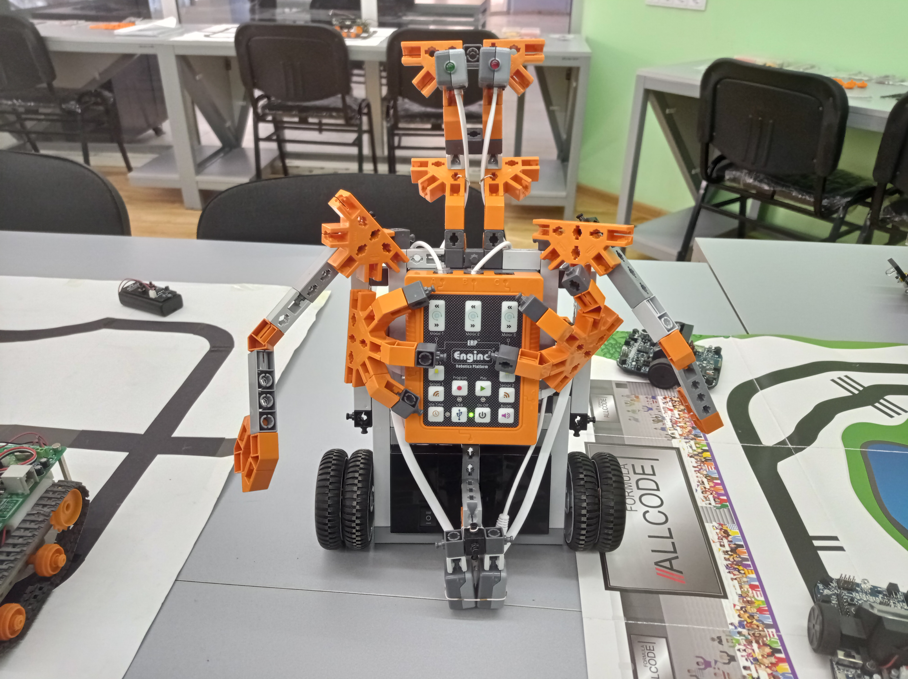
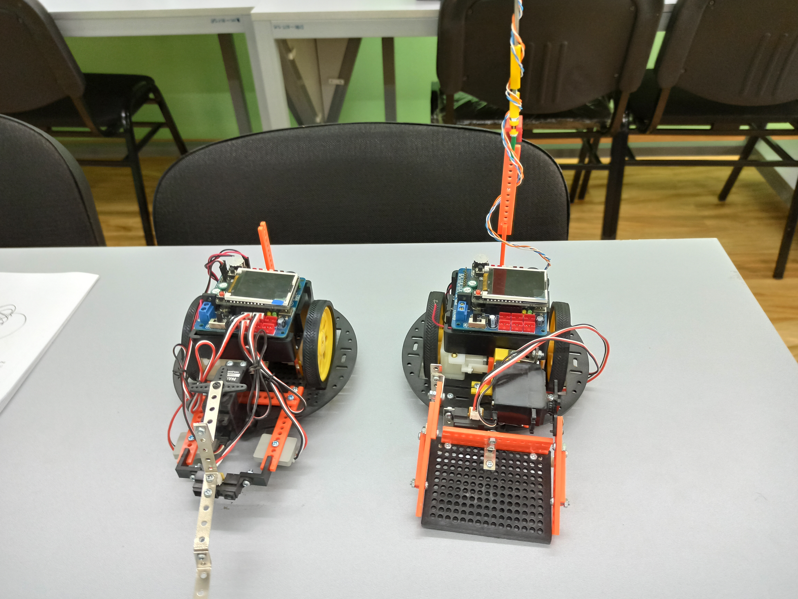
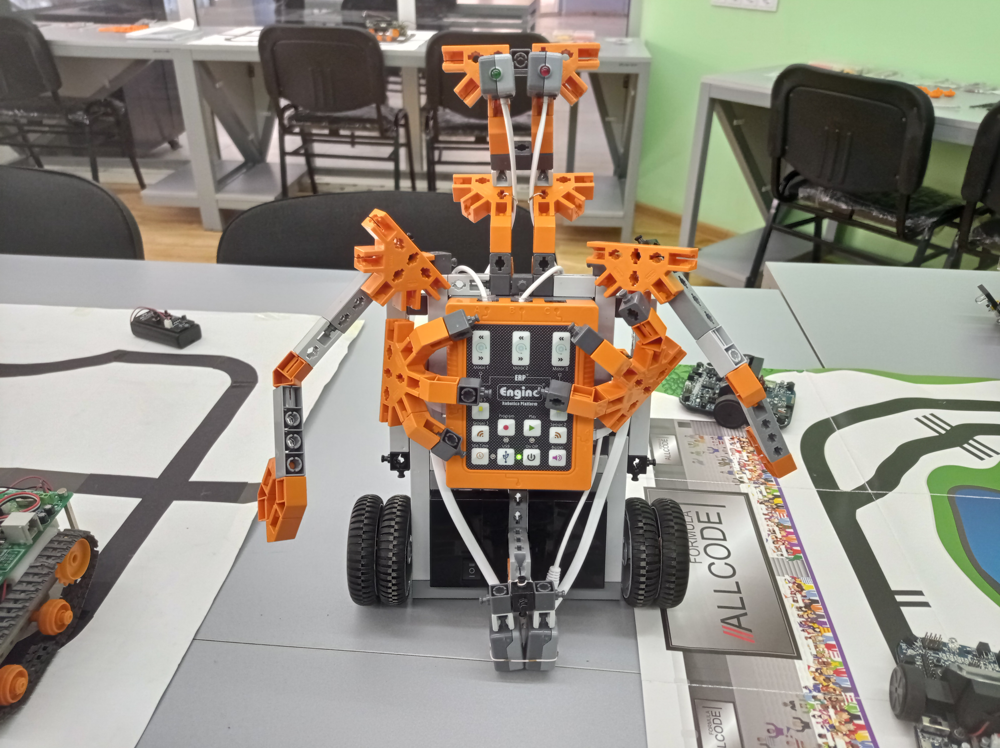

 





რობოტოტექნიკის ლაბორატორია
კრეატიული პროექტების დამუშავება
რობოტოტექნიკაში. მოიცავს რობოტების
სხვადასხვა მექანიკურ და ელექტრონულ
პლატფორმებს, სენსორებს,
შემსრულებელ მოწყობილობებს.
მოიცავს:
- ოთხ POP-BOT XT რობოტიზირებულ კონსტრუქტორს;
- ექვს IE-ROBOPICA ტიპის ინტელექტუალურ პროგრამირებად თვითმავალ რობოტს;
- ექვს სადემონსტრაციო პლატას PIC-MT-USB LCDით PIC მიკროკონტროლერის ბაზაზე;
- ექვს სადემონსტრაციო პლატას PIC-MT-USB LCDით PIC მიკროკონტროლერის ბაზაზე;
-
რვა PIC-P40-USB-პლატას USB ინტერფეისით,
რომელიც წარმოადგენს მოწყობილობას
მაკეტირებისათვის
მიკროკონტროლერის საფუძველზე.